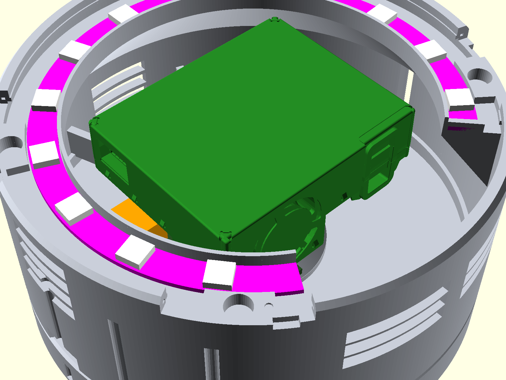
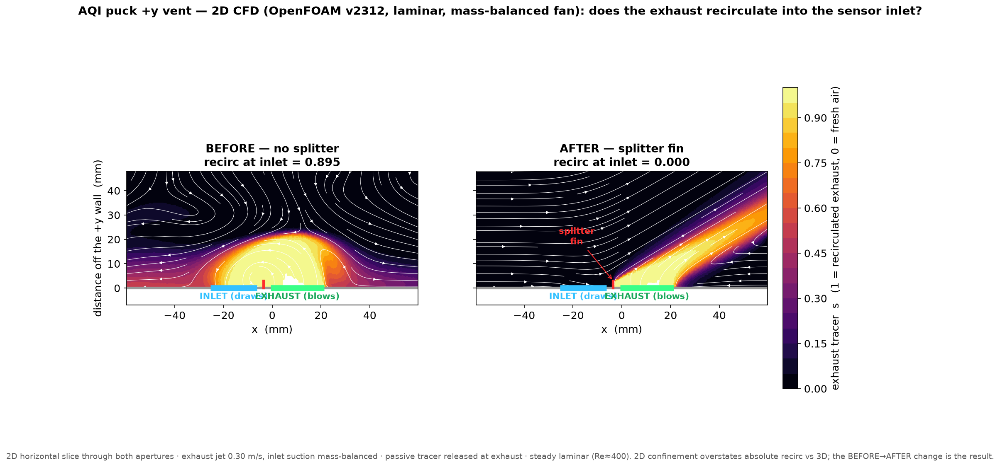
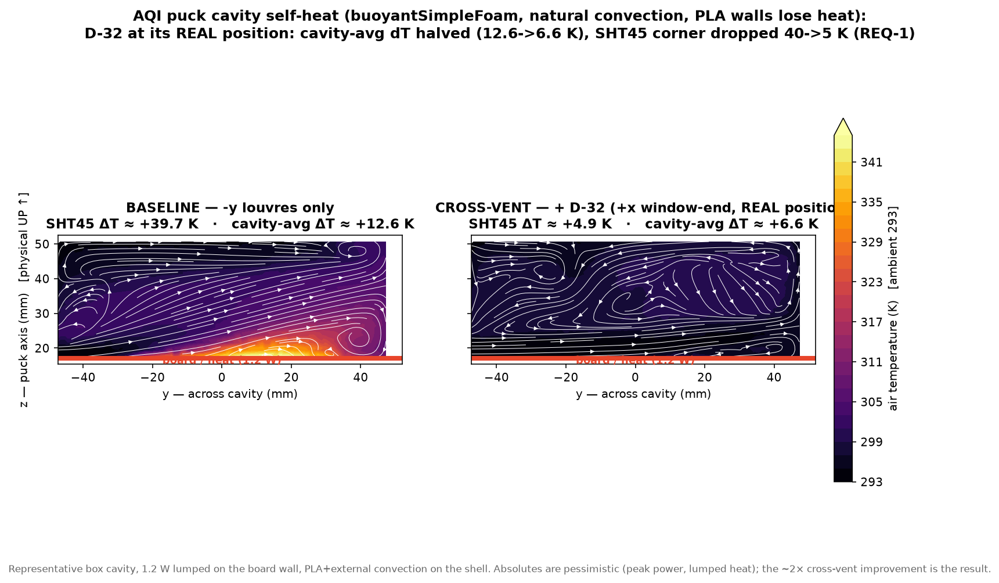
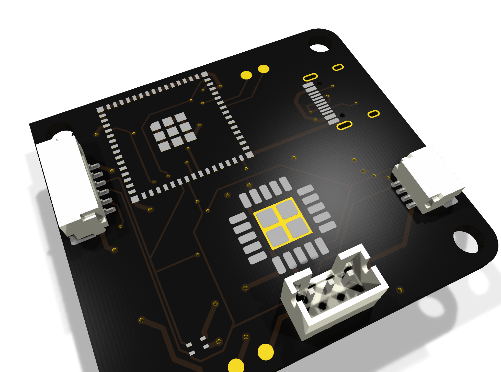
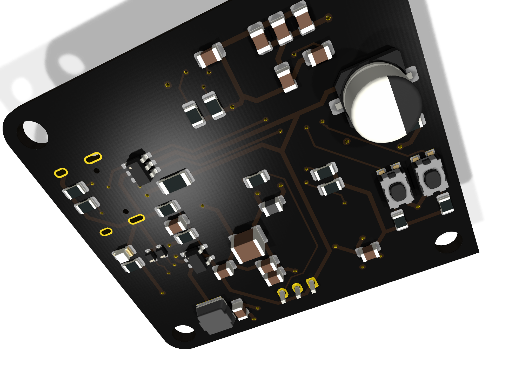

1.Sensors
CO₂ is the most useful single indicator for a home or office. It tracks occupancy and ventilation, and concentrations above about 1000 ppm are associated with drowsiness and reduced concentration. Many low-cost monitors report "eCO₂" estimated from a VOC sensor, which does not reliably reflect ventilation. This design uses a photoacoustic NDIR sensor (SCD41). The Sensirion SEN55 adds PM1/2.5/4/10, a self-baselining VOC index, a NOx index (relevant for gas stoves), and RH/T, through a single intake with Sensirion's sensor-fusion algorithms. A separate SHT45 in the cool intake air measures room temperature, because the SEN55's internal RH/T sensor sits in its own heated airflow.
2.Enclosure airflow
Unlike a sealed enclosure, an air-quality sensor has to exchange air freely while avoiding two errors. First, exhaust from the particulate sensor's fan must not recirculate into its own inlet, which would bias the particulate reading. Second, heat from the board must not reach the temperature sensor, which would otherwise read several kelvin high. Sensirion's design-in guidelines specify requirements for both, and I modelled each case in OpenFOAM before committing to a printed shell.


The mechanical CAD is parametric and checked by automated tests before printing. One test confirms that every part is a single connected body, one confirms that each part slices without supports, and one runs boolean interference and minimum-clearance checks in both positions of every joint, against Sensirion's STEP geometry. These tests found errors that visual review of the renders had missed: floating pads, a grille cut breaking through the curved wall, and a bayonet cam that interfered in its locked position.
3.The board
The board reuses an earlier platform of mine: ESP32-S3-MINI-1, KiCad to JLCPCB assembly, and firmware with an offline ring buffer that uploads to InfluxDB. The 5 V rail supplies the SEN55's fan and laser, and a buck converter rather than an LDO produces the 3.3 V rail. At peak load an LDO would dissipate about 1 W inside the measured airspace, against about 0.2 W for the buck, so the buck reduces the heat source directly.
As with Rook, the netlist is defined in code. One SKiDL source generates the board, and a separate generator produces the readable, sectioned schematic. The fabrication script only emits gerbers, BOM and pick-and-place files if every check passes: DRC against a documented list of accepted exceptions, a pre-fabrication layout check, and a SPICE suite run on parasitics extracted from the routed copper (trace resistance, microstrip capacitance over the inner planes, via inductance). The BOM check found a real error: the schematic generator had drifted from the netlist source and still referenced a switch that had been rejected as unassemblable.

